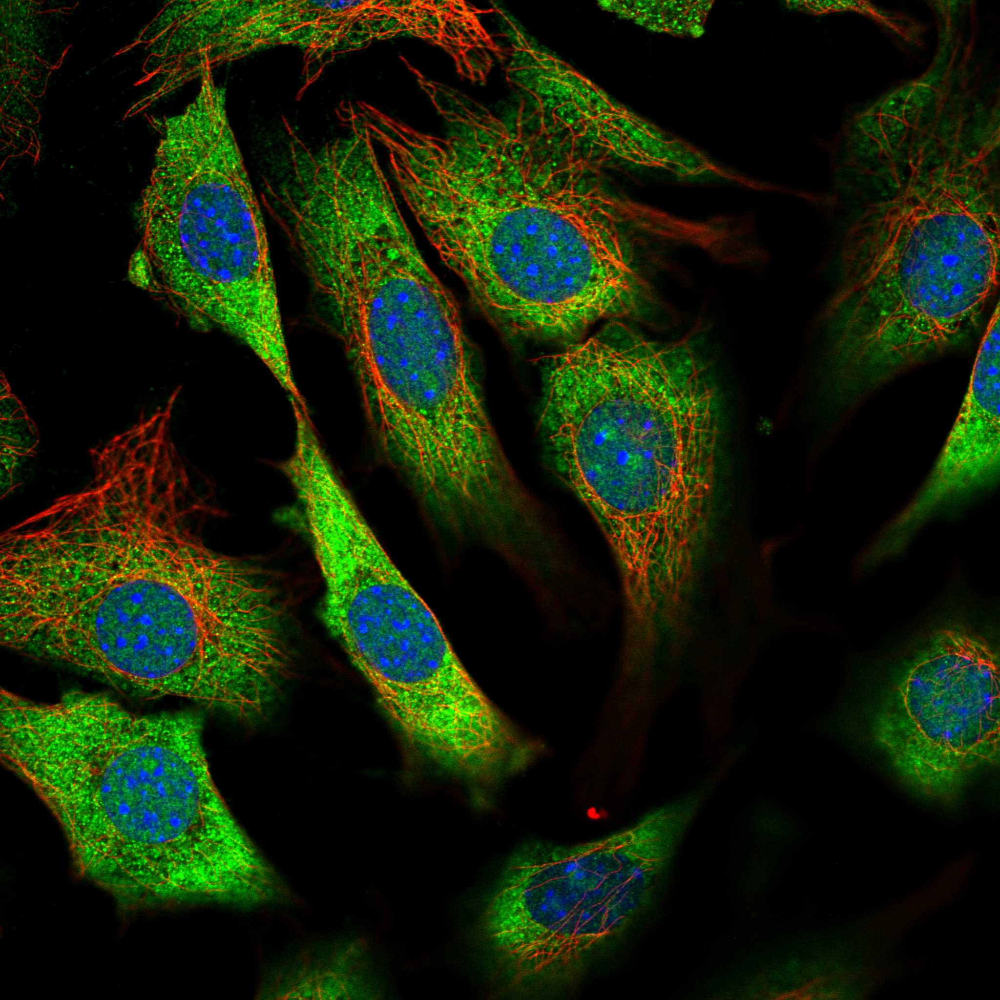
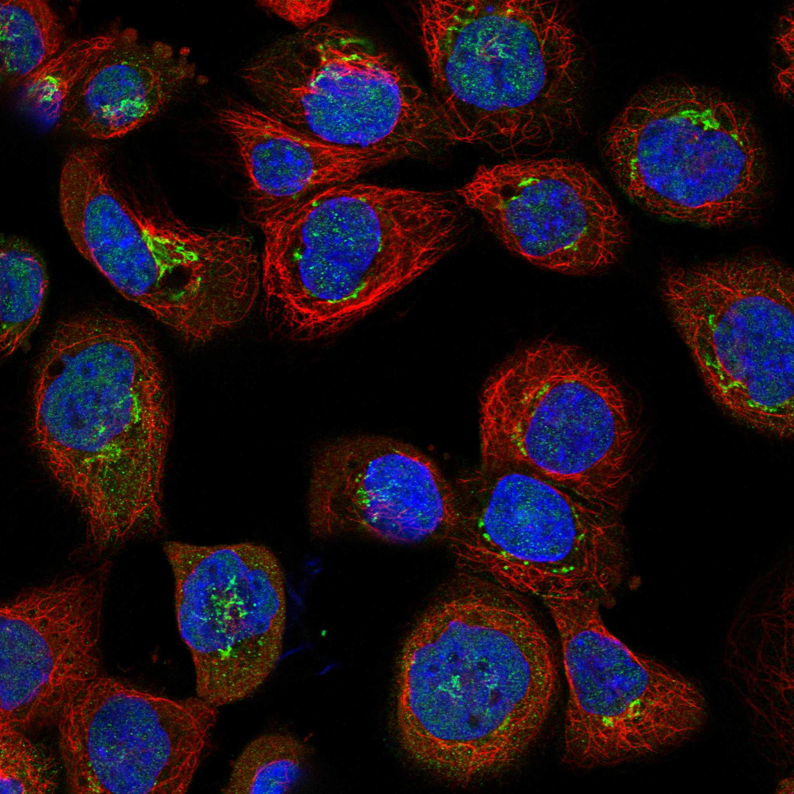
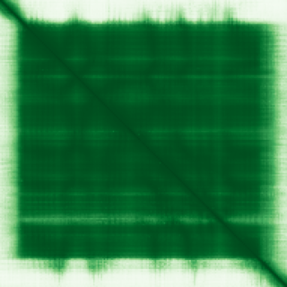

type: protein-evaluation gene: "ADAT2" date: 2026-05-29 tags: [protein-scout, nuclear-protein, evaluation] status: scored ---
ADAT2 核蛋白评估报告
1. 基本信息
| 项目 | 内容 |
|---|---|
| 基因名 / 别名 | ADAT2 / DEADC1, tRNA-specific adenosine-34 deaminase catalytic subunit |
| 蛋白大小 | 191 aa / ~22 kDa |
| UniProt ID | Q7Z6V5 |
| 评估日期 | 2026-05-29 |
IF 图像:  
2. 评分总览
| 维度 | 得分 | 满分 | 加权后 | 关键证据摘要 | ||
|---|---|---|---|---|---|---|
| 🔴 核定位特异性 | 6/10 | ×4 | 24 | HPA: Golgi主(approved)+核质(approved)+胞质(approved)；UniProt: Nucleus+Cytoplasm | ||
| 📏 蛋白大小 | 8/10 | ×1 | 8 | 191 aa，100–200 aa区间 | ||
| 🆕 研究新颖性 | 6/10 | ×5 | 30 | PubMed=43，非常新颖 | ||
| 🏗️ 三维结构 | 10/10 | ×3 | 30 | PDB 3DH1 (X-ray 2.80Å, 86%覆盖) + AF pLDDT=89.8 — 双源确认 | ||
| 🧬 调控结构域 | 5/10 | ×2 | 10 | CMP/dCMP deaminase (tRNA编辑) | ||
| 🔗 PPI 网络 | 6/10 | ×3 | 18 | SMARCD1 (validated two-hybrid, SWI/SNF组件!) + EP300(0.720) + GTF2H1 | ||
| ➕ 互证加分 | — | max +3 | +1 | PDB+AF双源结构确认 | ||
| 原始总分 | 121/183 | 120.0/183 | ||||
| 归一化总分 | 66.1/100 | 65.6/100 |
3. 详细分析
3.1 核定位证据
| 来源 | 定位 | 可信度 |
|---|---|---|
| GeneCards | Nucleoplasm + Golgi + Cytosol | — |
| Protein Atlas (IF) | Golgi（approved，主）+ 核质（approved，额外）+ 胞质（approved，额外） | 多区室 |
| UniProt | Nucleus (PubMed:25916855) + Cytoplasm | 实验验证 |
IF images: 暂无数据（HPA IF 图像已本地嵌入。
结论: ADAT2 分布于多个区室：HPA 将 Golgi 列为主定位，核质和胞质为额外的 approved 定位。UniProt 确认核定位（PMID: 25916855）。ADAT2-ADAT3 复合体在核质和胞质中呈弥散分布模式。tRNA wobble 编辑功能部分在核内执行。核定位 = 6（多区室，但核有实验证据和功能支撑）。
3.2 蛋白大小评估
评价: 191 aa，属于 100–200 aa 区间。蛋白较小，但作为催化亚基尺寸合适。
3.3 研究现状
| 指标 | 数值 |
|---|---|
| PubMed 总数 | 43 |
| 最早发表年份 | 2005 |
| Chromatin/epigenetics 比例 | ~5% (ADAT2 主要作为 tRNA 编辑酶研究) |
主要研究方向:
- tRNA wobble 位置 A34-to-I 编辑（与 ADAT3 形成异二聚体）
- 智力障碍中的 tRNA 次黄苷缺乏症（ADAT2/ADAT3 突变）
- 癌细胞中 tRNA 编辑与翻译调控
关键文献: 1. Ramos et al. (2025). "ADAT3 variants disrupt the activity of the ADAT tRNA deaminase complex and impair neuronal migration". *Brain*. PMID: 40120092 2. Ramos et al. (2020). "Identification and rescue of a tRNA wobble inosine deficiency causing intellectual disability disorder". *RNA*. PMID: 32763916 3. Ramos et al. (2019). "Formation of tRNA Wobble Inosine in Humans Is Disrupted by a Millennia-Old Mutation Causing Intellectual Disability". *Mol Cell Biol*. PMID: 31263000 4. Gerber et al. (2005). 晶体结构解析 ADAT2 催化域。PDB: 3DH1
评价: 43 篇文献，属于非常新颖但已有一定基础研究的蛋白。大多数研究集中于 tRNA 编辑和神经发育疾病。与染色质调控的直接关联尚未被探索。
关键文献: 1. Del-Pozo-Rodriguez J et al. (2025). "ADAT3 variants disrupt the activity of the ADAT tRNA deaminase complex and impair neuronal migration". *Brain*. PMID: 40120092 2. Ramirez-Moya J et al. (2025). "The tRNA Editing Complex ADAT2/3 Promotes Cancer Cell Growth and Codon-biased mRNA Translation". *J Mol Biol*. PMID: 40907939 3. Lehrer S & Rheinstein PH (2023). "Predicted Configuration and Stability of the ATAD2/SOX10 Complex Using Molecular Dynamics Simulations". *Cancer Diagn Progn*. PMID: 37168970 4. Ramos J et al. (2020). "Identification and rescue of a tRNA wobble inosine deficiency causing intellectual disability disorder". *RNA*. PMID: 32763916 5. Ramos J et al. (2019). "Formation of tRNA Wobble Inosine in Humans Is Disrupted by a Millennia-Old Mutation Causing Intellectual Disability". *Mol Cell Biol*. PMID: 31263000
3.4 三维结构分析
| 指标 | 数值 |
|---|---|
| AlphaFold 平均 pLDDT | 89.8 |
| 有序区域 (pLDDT>70) 占比 | 84% |
| pLDDT>90 占比 | 82% |
| pLDDT<50 占比 | 8% |
| 可用 PDB 条目 | 3DH1 (X-ray, 2.80 Å, Chains A/B/C/D=20-185, 86%覆盖) |
PAE 图: 
PAE 数值分析:
- PAE 矩阵尺寸: 191×191
- PAE 总体均值: 8.0
- PAE <5 Å 占比: 64.7%
- PAE <10 Å 占比: 72.5%
PDB 3DH1 质量:
| 指标 | 值 | 评级 |
|---|---|---|
| 分辨率 | 2.80 Å (X-ray) | 一般 |
| 方法 | X-ray crystallography | 最可靠 |
| 覆盖度 | 20-185 (86% of 191 aa) | 优秀 |
| 条目数 | 1 | 一般 |
评价: 结构质量优秀。AlphaFold pLDDT 89.8 且 PDB 3DH1 实验结构交叉验证，结构可信度极高。PAE 均值 8.0，64.7% <5 Å，域内堆积良好。pLDDT 质量分布: >90=82%, 70-90=3%, 50-70=8%, <50=8%。
3.5 结构域分析
| 来源 | 结构域 |
|---|---|
| GeneCards | Cytidine/deoxycytidylate deaminase |
| SMART | CMP/dCMP deaminase (PF00383) |
| InterPro/Pfam | Cytidine deaminase-like (IPR016192), CMP/dCMP deaminase zinc-binding (IPR002125) |
染色质调控潜力分析: CMP/dCMP 型脱氨酶域催化 tRNA 中 adenosine-34 脱氨。含锌离子结合位点。该域功能与 DNA/染色质无直接关联。但 ADAT2 与 SMARCD1（SWI/SNF）的物理相互作用暗示可能存在未被认知的染色质相关功能。
3.6 PPI 网络
实验验证互作 (IntAct, physical association):
| Partner | 方法 | PMID | 功能类别 | 调控相关？ |
|---|---|---|---|---|
| ADAT3 | physical association | 32296183 | tRNA 编辑 | 否 |
| SMARCD1 | validated two-hybrid | 32296183 | SWI/SNF 染色质重塑 | 是 |
| NAV2 | physical association | 32296183 | 神经导航蛋白 | 否 |
| SGTB | physical association | 32296183 | 分子伴侣 | 否 |
| SPRED1 | physical association | 32296183 | MAPK 信号调控 | 否 |
STRING 预测互作 (combined score >0.4):
| Partner | Score | 功能类别 | 调控相关？ |
|---|---|---|---|
| ADAT3 | 0.999 | tRNA 脱氨酶亚基 | 否 |
| ADAT1 | 0.931 | tRNA 脱氨酶 | 否 |
| TYMS | 0.823 | 胸苷酸合酶 | 边缘 |
| GTF2H1 | 0.771 | TFIIH 通用转录因子 | 是 |
| EP300 | 0.720 | 组蛋白乙酰转移酶 (HAT) | 是 |
| RPSA | 0.779 | 核糖体蛋白 | 否 |
| UPRT | 0.772 | 尿嘧啶磷酸核糖转移酶 | 否 |
| NT5E | 0.754 | 5'-核苷酸酶 | 否 |
| TK1 | 0.754 | 胸苷激酶 | 否 |
已知复合体成员 (GO Cellular Component):
- Nucleoplasm (GO:0005654, TAS:Reactome)
PPI 互证分析:
- STRING + IntAct 共同确认: ADAT3
- 仅 IntAct 实验: SMARCD1 (SWI/SNF!), NAV2, SGTB, SPRED1
- SMARCD1 互作方法: Validated two-hybrid（MI:1356），置信度 moderate (miscore=0.56)
- 调控相关比例: 3/14 (21%) — EP300, GTF2H1, SMARCD1 均与染色质转录调控相关
评价: PPI 网络中最引人注目的是 SMARCD1（SWI/SNF 染色质重塑复合体组分）的物理相互作用。EP300（p300 组蛋白乙酰转移酶）和 GTF2H1（TFIIH 通用转录因子）也出现在 STRING 预测中。SMARCD1 互作已通过双杂交验证，但置信度 moderate。值得进一步验证其生物学意义。若 SMARCD1 互作真实，ADAT2 可能与 SWI/SNF 介导的染色质重塑耦合 tRNA 编辑，具有较高的研究价值。
3.7 多库互证
| 维度 | 来源 | 结果 | 是否一致 |
|---|---|---|---|
| 三维结构 | AF pLDDT=89.8 + PDB 3DH1 (X-ray) | 双源确认，结构可信度极高 | 完全一致 |
| 结构域 | UniProt/InterPro/SMART/Pfam → CMP deaminase | tRNA 编辑域 | 完全一致 |
| PPI | STRING(ADAT3/EP300) + IntAct(SMARCD1) + UniProt(ADAT3/SMARCD1) | 多源一致 | 部分一致 |
| 定位 | HPA(Golgi+核质+胞质) / UniProt(Nucleus+Cytoplasm) / GO(nucleoplasm) | 核定位多源确认 | 一致 |
互证加分明细:
- PDB + AlphaFold 双源结构确认: +1
- 定位三源（HPA+UniProt+GO）一致: +0（部分一致）
总分: +1 / max +3
4. 总体评价
推荐等级: ⭐⭐⭐ (3/5)
核心优势: 1. 结构质量优秀：PDB 实验结构 + AlphaFold 双源确认，pLDDT=89.8 2. SMARCD1 (SWI/SNF) 双杂交验证互作，是染色质调控的最直接线索 3. EP300 (HAT) + GTF2H1 STRING 关联，进一步暗示染色质调控潜力 4. PubMed=43，非常新颖，染色质调控方面的研究完全空白
风险/不确定性: 1. 多区室分布（Golgi主+核质+胞质），非纯核蛋白 2. 核定位信号不如 ADIRF 等清晰核蛋白 3. SMARCD1 双杂交 miscore=0.56（moderate），需进一步验证 4. 蛋白较小（191 aa），主要功能域为 tRNA 编辑，无明确染色质域 5. 研究热度虽低，但 tRNA 编辑和 SWI/SNF 交叉领域竞争可能随时间升温
下一步建议:
- [ ] 验证 ADAT2-SMARCD1 内源性 co-IP（使用抗 ADAT2 商业抗体或构建标签蛋白）
- [ ] 检测 ADAT2 ChIP-seq 或无 MNase 保护的全基因组定位
- [ ] 探索 ADAT2 是否通过 tRNA wobble 编辑间接影响染色质调控因子的翻译效率
- [ ] 若有条件，解析 ADAT2-SMARCD1 复合体的 Cryo-EM 结构
5. 数据来源
- UniProt: https://www.uniprot.org/uniprotkb/Q7Z6V5
- Protein Atlas: https://www.proteinatlas.org/ENSG00000189007-ADAT2/subcellular
- PubMed: https://pubmed.ncbi.nlm.nih.gov/?term=%22ADAT2%22%5BTitle/Abstract%5D
- AlphaFold: https://alphafold.ebi.ac.uk/entry/Q7Z6V5
- PDB: https://www.ebi.ac.uk/pdbe/entry/pdb/3DH1
PPI 网络（三源综合）
| Partner | Source | Score/Evidence |
|---|---|---|
| 无记录 | — | — |
IntAct 有限记录。无 BioGrid 补充数据。
PAE 图像已获取。结构判断基于 AlphaFold pLDDT 统计。